AI概念模擬圖集
竹山與崙背的AI生成圖版，九個案例的概念圖版與生成提示詞
本附錄分兩部分。第一部分（G.1、G.2）收錄第10章兩個示範的AI概念模擬圖版，共12張：竹山市街與崙背鄉各6張。兩個示範各有一張總覽圖版放在第10章（竹山見圖10.15，崙背見圖10.10），這裡補上其餘的圖版，按「地方DNA與設計來源」到「服務與通路」的順序排列，剛好對應一條從研究走到應用的設計流程。
G.1、G.2的圖版是以生成式AI產出的概念模擬圖，用來討論設計方向，不是實物照片、田野照片或實測結果。圖中的人物、場所、色彩、文字與產品細節，都必須依研究與實作核對；圖版來自作者提供的ChatGPT版審閱編修稿，生成工具與圖像權利列在附錄E.1，出版前須確認。
第一部分的每張圖版附兩段文字：如何讀圖說明這張圖版在設計流程中的角色，並提醒哪些部分只是模擬；從圖面回到實作則指出下一步要用哪一項工具或章節，把圖面上的想法變成可以檢核的設計文件（表G.1）。
| 圖版 | 檢視的重點 | 回到哪裡實作 |
|---|---|---|
| 02 地方DNA與設計來源 | DNA、五感、語彙與使用需求之間，是否有上游理由 | 第2、6、7章；範本14 |
| 03 地方色彩與圖紋系統 | 色彩的角色、圖紋的尺度與文字留白 | 第8、9章；範本07、08、13 |
| 04 物件本體與CMF | 色彩、材料與表面處理的組合，以及接觸位置 | 第10章；P6-1 |
| 05 包裝與溝通全套 | 資訊分層、取放方式與標示預留 | 第10章；P6-2 |
| 06 從遊程（文化節）到日常 | 使用情境的腳本與可被推翻的假設 | 第10、12章 |
| 07 服務與通路 | 陳列、補貨、內容更新與合作確認 | 第10、11、17章 |
第二部分（G.3至G.11）是3.3版新增的九個案例，每個案例三張圖版：A場域與地方DNA、B色彩與圖紋系統、C設計落地與六道驗證，共27張。每張圖版附「如何讀圖」「從圖面回到實作」與一則中英對照的生成提示詞（表G.2）。
它們和第一部分不同，請特別留意。 這27張是本書以程式繪製的向量概念圖，不是AI生成的圖像，也不是實景或田野照片；色彩是示範用概念色，未經採樣，圖上標示「待採樣」；古坑的紋樣與應用則直接使用作者自己的設計稿。每張圖版後面的提示詞，是給你在有影像生成工具時自行嘗試的草稿，本書沒有用它們生成圖像，生成結果須依研究核對後才可使用。提示詞一律寫明「不得出現既有漫畫角色、商標、可辨識的真實人物與可讀文字」，並以中英對照，方便貼入不同的工具。
三張圖版對應17.6節驗證卡的不同部分：A圖版對應V1至V3（場域、證據與DNA），B圖版對應V4（設計一致），C圖版把六道驗證收成一條摘要，並寫出下一步。
| 案例 | 圖版 | 圖版要說明的事 | 回到書內 |
|---|---|---|---|
| 鳥取縣 | G.3 鳥取01至03 | 「命名」要有成因：鳥取把「蟹取縣」「星取縣」「漫畫王國」做成品牌，是因為背後有可查的蟹產量、星空觀察與漫畫家出身地；缺的是把「慢生活」也補上證據。 | 2.5、3.4、9.7、15.3節；17.6節 |
| 居鑾 | G.4 居鑾01至03 | 鏈條完整不等於證據完整：居鑾的「轉譯鏈」是九個案例中最順的，但最上游的跨族群DNA與自然DNA還是空的。 | 3.5、15.3節；17.6節 |
| 怡保 | G.5 怡保01至03 | 色名不是色票：怡保是九個案例中唯一把「城市色彩」寫進轉譯鏈的，但停在色名；從色名走到色碼，要靠第8章的採樣與命名。 | 3.5、8.4、9.7、15.3節；17.6節 |
| 雲林斗南 | G.6 斗南01至03 | 廊帶有路徑、有品牌，缺的是共同的「識別」與「治理」；減碳估算是好的起點，但要把假設寫成假設。 | 3.6、10.11、11.6、16.4節；17.6節 |
| 雲林古坑麻園 | G.7 古坑01至03 | 古坑是「設計層最完整、證據層最空」的案例：它示範了第8、9章可以做到多精確，也提醒好看的系統若缺DNA證據，就可能只是漂亮的元素擷取。 | 2.5、6.6、9.5、9.7、10.11節；17.6節 |
| 雲林土庫 | G.8 土庫01至03 | 土庫示範兩件事：一是最強的DNA（進香中繼）可能被最大的投資（旅店與可可）繞過；二是提案的目標，要用算術檢查它的假設。 | 2.5、5.4、10.11、15.3節；17.6節 |
| 雲林北港 | G.9 北港01至03 | 北港示範「從宗教人潮到日常消費」的轉譯題目；它也提醒：一個瀕危的產業DNA（豆菜庄僅剩3戶），不一定要變成商品，可能要先被保存。 | 2.5、9.7、10.11、11.6、15.3節；17.6節 |
| 南投鹿谷 | G.10 鹿谷01至03 | 鹿谷最適合示範「茶是DNA、陶瓷廢料是可轉化物」：兩者不在同一條鏈上，卻可以在同一個永續框架裡互相補充。 | 2.5、9.7、10.11、16.4節；17.6節 |
| 南投埔里 | G.11 埔里01至03 | 埔里示範「沒有人替地方寫過轉譯鏈，我們怎麼做？」：先把三條線索並排檢驗，再決定「水」能不能成為DNA，最後才談魅力與設計。 | 2.4、2.5、9.7、10.11、11.10、15.3節；17.6節 |
各案例的驗證卡、DNA四道檢驗與來源見17.6節與附錄F.6；圖版中的內容不是田野記錄，案例事實見附錄E.7。
G.1竹山市街：商品概念圖版（6張）#
竹山02 地方DNA與設計來源
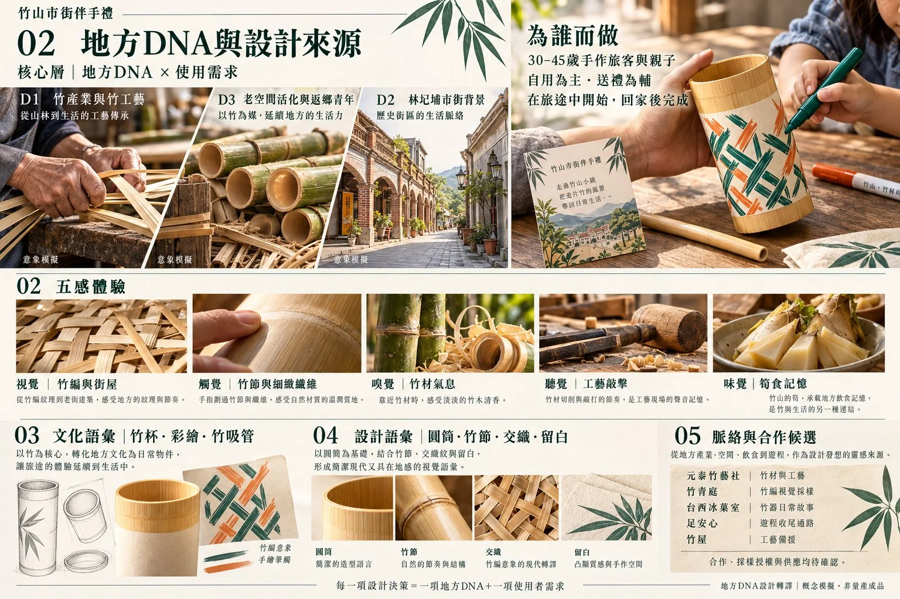
如何讀圖。用同一頁串接DNA、五感、語彙與使用需求，觀察每個物件是否有上游理由。圖中的工坊、街景與感官情境屬模擬，不能當成田野照片；嗅覺、味覺等描述應回到實際採樣。
從圖面回到實作。請把圖中的每一項設計決策寫回範本14，標示哪些有來源、哪些仍是提案。
圖中人物、場所、色彩、文字與產品細節均須依研究與實作核對；所有標示、圖紋、QR、尺寸與性能，以正式原檔、實物和確認紀錄為準。
竹山03 地方色彩與圖紋系統
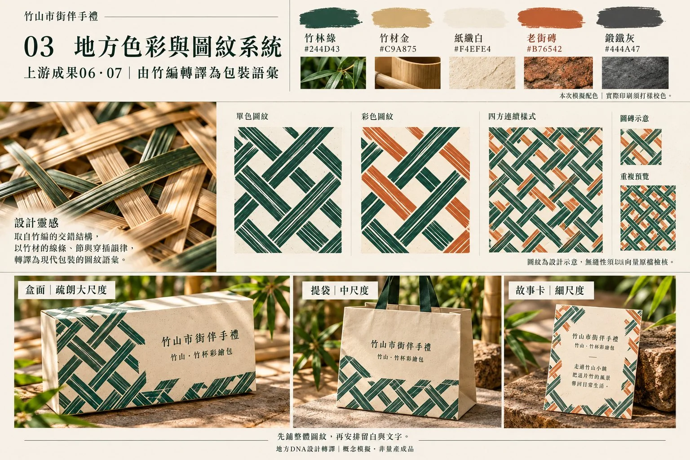
如何讀圖。主色、材料色與強調色形成家族；同一圖紋在盒面、提袋與故事卡上改變尺度。圖中所示的色碼與重複預覽是概念提案，不能直接當作現地採樣或無縫技術的證明。
從圖面回到實作。以第9章的方法重建圖磚，檢查四邊、三種尺度、文字留白與實際套版。
圖中人物、場所、色彩、文字與產品細節均須依研究與實作核對；所有標示、圖紋、QR、尺寸與性能，以正式原檔、實物和確認紀錄為準。
竹山04 物件本體與CMF
如何讀圖。觀察竹材本色、彩繪區與表面處理如何形成對比。圖面把杯口與杯內留白作為設計方向，但仍須確認材料、處理方式與預定用途。
從圖面回到實作。把照片式的表現轉成部件表：尺寸、來源、材料、表面、接觸位置、測試與責任人。
圖中人物、場所、色彩、文字與產品細節均須依研究與實作核對；所有標示、圖紋、QR、尺寸與性能，以正式原檔、實物和確認紀錄為準。
竹山05 包裝與溝通全套
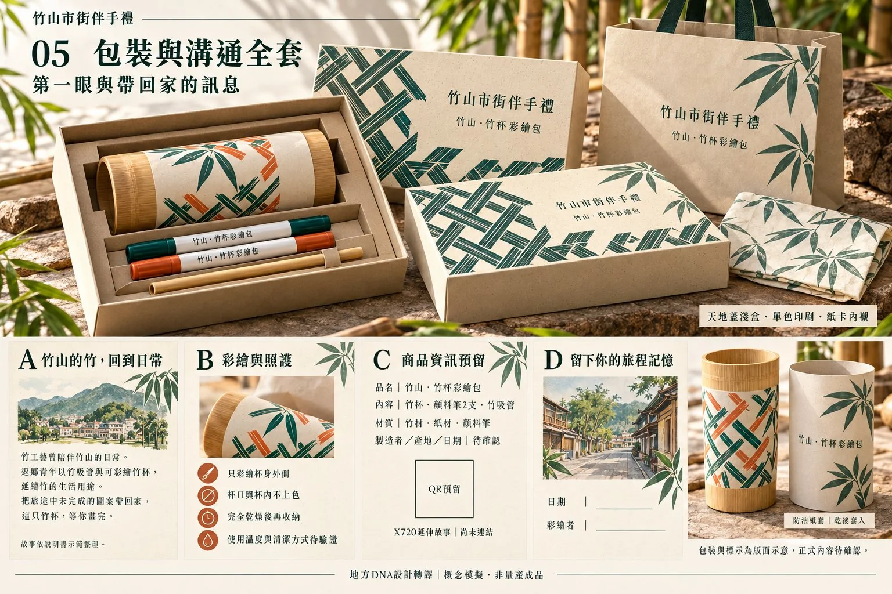
如何讀圖。開箱應讓內容物容易理解，故事與使用資訊應分層。看似完整的標示區仍只是版面預留，必須依真實商品的規格校對。
從圖面回到實作。檢查物件能否取放、未乾的作品如何保護、文案是否太長，以及各配件是否都納入BOM。
圖中人物、場所、色彩、文字與產品細節均須依研究與實作核對；所有標示、圖紋、QR、尺寸與性能，以正式原檔、實物和確認紀錄為準。
竹山06 從遊程到日常
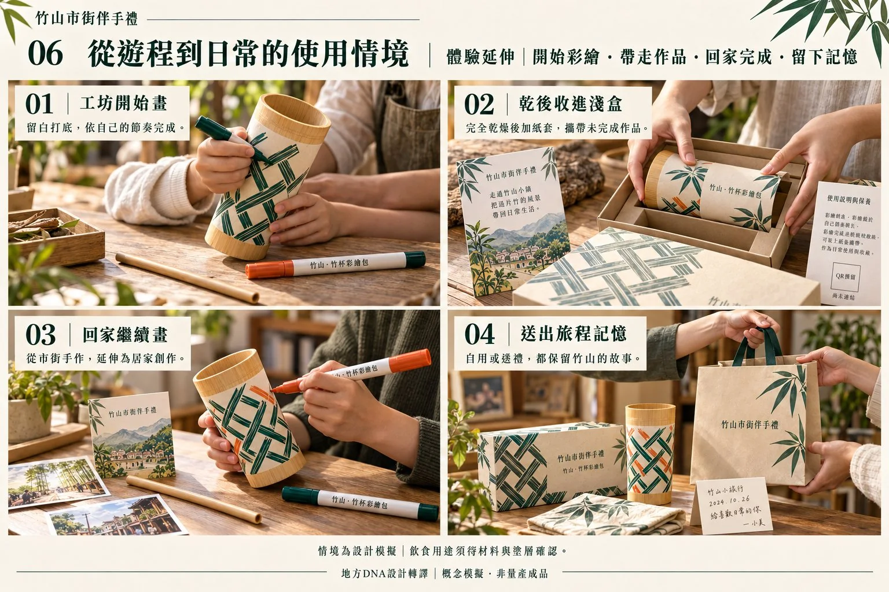
如何讀圖。四個情境把工坊操作、乾燥收納、回家續作與送禮連起來。這是設計腳本，還不是使用者的觀察紀錄。
從圖面回到實作。每一幕建立一個可以被推翻的假設；安排實物任務，記錄困難，而不只詢問喜不喜歡。
圖中人物、場所、色彩、文字與產品細節均須依研究與實作核對；所有標示、圖紋、QR、尺寸與性能，以正式原檔、實物和確認紀錄為準。
竹山07 服務與通路
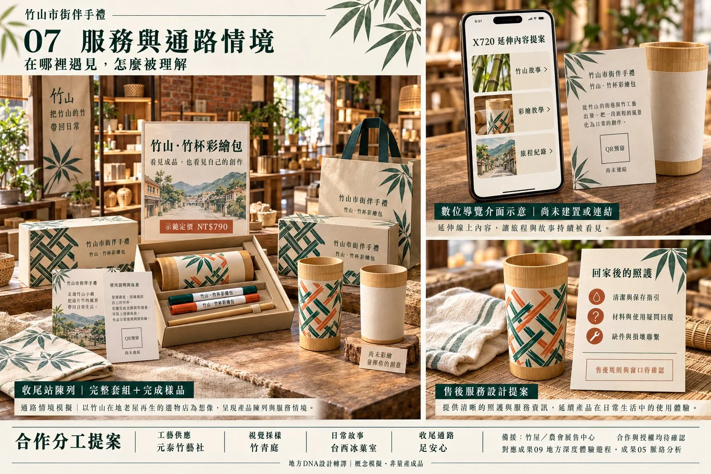
如何讀圖。展示完整組與完成樣品，能協助門市說明產品。數位內容、合作分工與回家後的照顧都是服務提案，圖中的場景不代表真實門市已經採用。
從圖面回到實作。補上陳列、補貨、退換、內容更新與合作確認；示範價格的適用範圍要與BOM一致。
圖中人物、場所、色彩、文字與產品細節均須依研究與實作核對；所有標示、圖紋、QR、尺寸與性能，以正式原檔、實物和確認紀錄為準。
G.2崙背鄉：商品概念圖版（6張）#
崙背02 地方DNA與設計來源
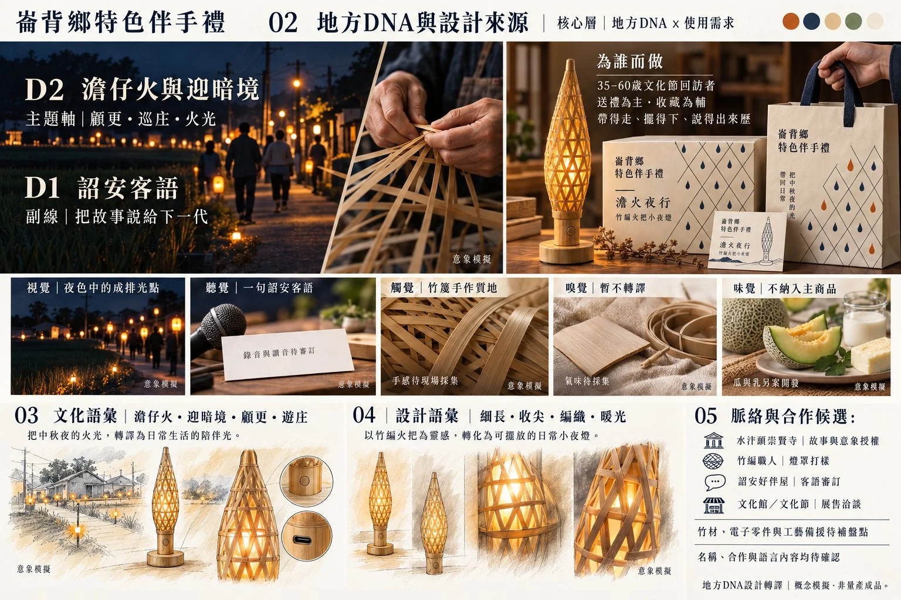
如何讀圖。主題軸是澹仔火迎暗境，語言是副線。圖像把竹編、夜色與故事連起來，但不能用生成的夜巡畫面代替地方活動的影像。
從圖面回到實作。檢查主題軸與副線的主從關係；把尚未採集的聲音、觸感與語言內容保留為待確認。
圖中人物、場所、色彩、文字與產品細節均須依研究與實作核對；所有標示、圖紋、QR、尺寸與性能，以正式原檔、實物和確認紀錄為準。
崙背03 地方色彩與圖紋系統
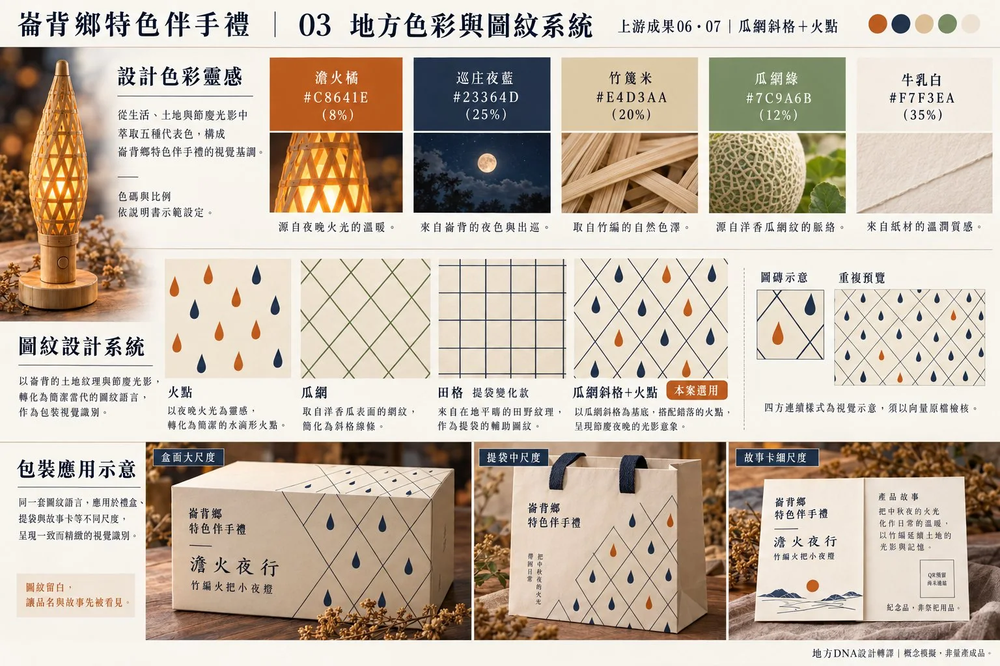
如何讀圖。五色與瓜網、田格、火點形成不同的視覺路徑。農業線索在本案是延伸，不能被解讀成迎暗境既有的傳統圖騰。
從圖面回到實作。正式的圖紋須重建向量座標，完成3×3、5×5預覽與套版；配色角色參照第8章。
圖中人物、場所、色彩、文字與產品細節均須依研究與實作核對；所有標示、圖紋、QR、尺寸與性能，以正式原檔、實物和確認紀錄為準。
崙背04 物件本體與CMF
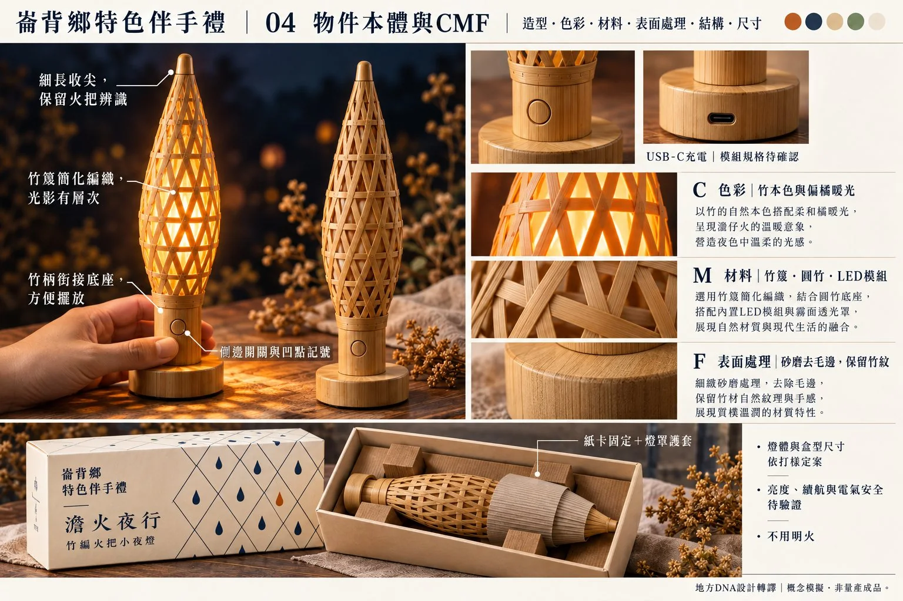
如何讀圖。細長收尖、交錯光影、側邊按鍵與底座共同建立產品意圖。USB-C與電源位置只是概念示意。
從圖面回到實作。由實際的模組、工藝與使用條件確認尺寸、穩定度、溫升、充電與續航，不從圖面推算是否合格。
圖中人物、場所、色彩、文字與產品細節均須依研究與實作核對；所有標示、圖紋、QR、尺寸與性能，以正式原檔、實物和確認紀錄為準。
崙背05 包裝與溝通全套
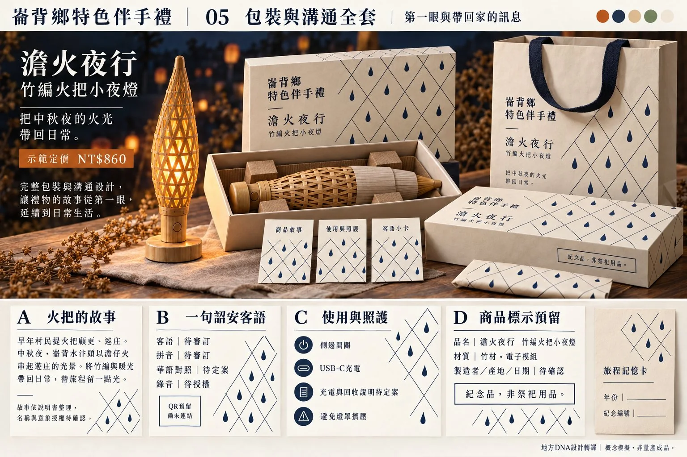
如何讀圖。故事、客語、使用與標示被分成不同的資訊層。圖中文字仍須逐字校對；其中的歷史描述，應依第15章的審訂原則重新確認。
從圖面回到實作。客語拼寫與音檔不得由AI補造；QR未建立之前維持「預留」，用途說明也需與文化角色討論。
圖中人物、場所、色彩、文字與產品細節均須依研究與實作核對；所有標示、圖紋、QR、尺寸與性能，以正式原檔、實物和確認紀錄為準。
崙背06 從文化節到日常
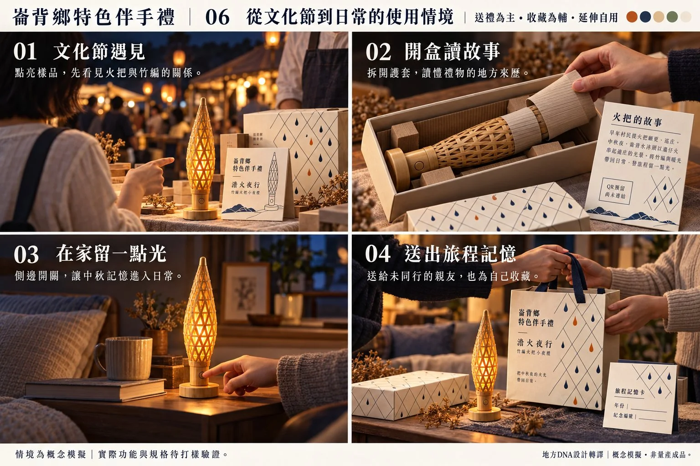
如何讀圖。看見、開箱、使用與送禮四幕，讓商品的價值超出活動當天。人物與場景均屬概念模擬，不是已經發生的購買或使用。
從圖面回到實作。設計行前、當下與回家後的追訪問題，檢查理解是否持續，而不只測第一眼的吸引力。
圖中人物、場所、色彩、文字與產品細節均須依研究與實作核對；所有標示、圖紋、QR、尺寸與性能，以正式原檔、實物和確認紀錄為準。
崙背07 服務與通路
如何讀圖。文化節、文化館、牧場等都是通路候選；場景只用來討論展示與溝通，不代表已經同意展售。數位內容也需要有人維護。
從圖面回到實作。完成文化、技術與營運三組確認（圖10.13），特別檢查單一職人依賴、材料缺口、電池處理與更新責任。
圖中人物、場所、色彩、文字與產品細節均須依研究與實作核對；所有標示、圖紋、QR、尺寸與性能，以正式原檔、實物和確認紀錄為準。
G.3鳥取縣：命名與品牌型（3張概念圖版）#
鳥取01 場域與地方DNA
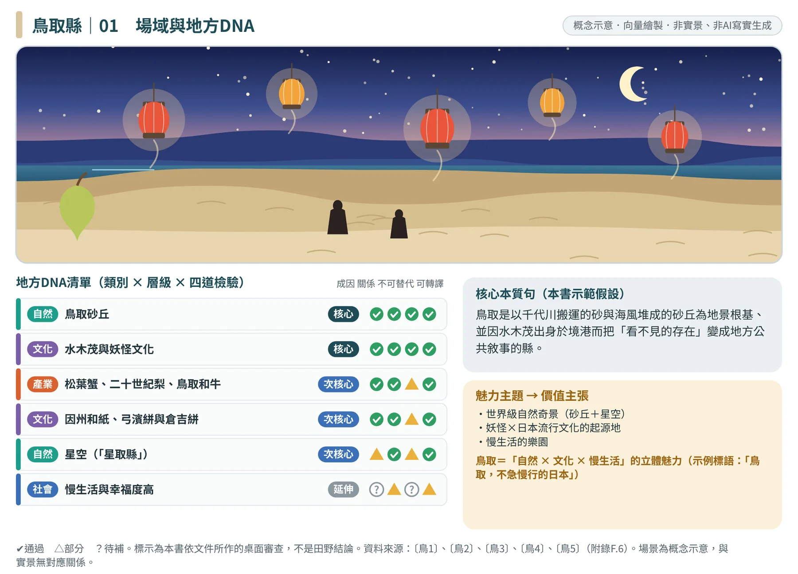
如何讀圖。上方是依本書示範假設繪製的場景：砂丘、海與夜空，加上原創的妖怪燈影（提燈與剪影，不使用既有角色）。下方列出六項候選DNA與四道檢驗：只有「鳥取砂丘」與「水木茂與妖怪文化」四道全過，星空與慢生活仍有△與？，所以只能當次核心或延伸。
從圖面回到實作。回到2.4節的四道檢驗與3.4節：為每一項DNA補第二條獨立路徑（例如縣政府統計、星空保護地的觀測紀錄），再回頭決定魅力主題。標語「不急慢行的日本」只是示例，不是鳥取縣的官方用語。
鳥取砂丘的黃昏，起伏的風紋砂丘延伸到日本海，夜空開始出現星星，遠處有兩個行走的剪影；空中漂浮幾盞原創的紙燈籠剪影，象徵「看不見的存在」；扁平編輯插畫風，靛藍、砂米、海藍配色；不得出現既有漫畫角色、商標、可辨識的真實人物與可讀文字。 16:9。
Tottori sand dunes at dusk, wind-rippled sand, Sea of Japan on the horizon, first stars, two small walking silhouettes, original floating paper-lantern silhouettes as an abstract motif, flat editorial illustration, indigo / sand / sea-blue palette, no existing manga characters, no logos, no readable text, 16:9.
本圖版為本書以程式向量繪製的概念示意圖，不是實景照片、田野照片，也不是AI寫實生成的結果；圖中的色彩為示範用概念色，未經採樣。提示詞供你在有影像生成工具時自行嘗試，生成結果須依研究核對後才可使用；案例事實見附錄E.7的查核項目。
鳥取02 色彩與圖紋系統
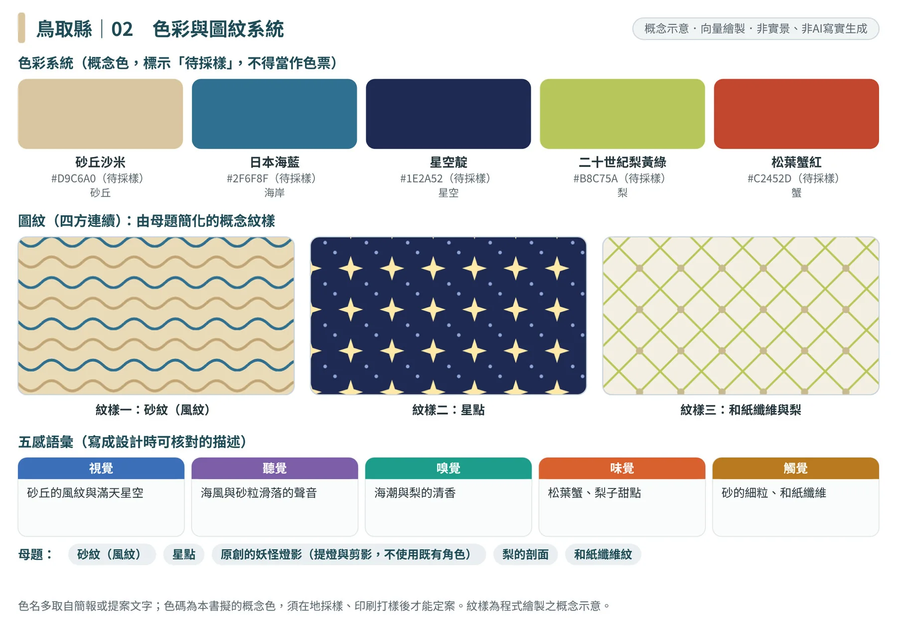
如何讀圖。五個色名來自簡報與縣政府資料的物件（砂丘、海、星空、梨、蟹），色碼是本書擬的概念色，標示「待採樣」。三個紋樣由母題簡化：風紋→波線、星空→星點、和紙與梨→交錯的纖維格。妖怪燈影只畫成原創的提燈與剪影，沒有使用任何既有角色。
從圖面回到實作。回到第8、9章：到砂丘與海岸實地採樣定色票，再用範本07、08建立紋樣的單位與規格；妖怪相關的造形要先走9.7節的識別治理，確認是原創還是授權。
三種四方連續紋樣的設計稿：（一）砂丘風紋，米色底配兩條波線；（二）夜空星點，靛藍底配四芒星；（三）和紙纖維與梨的斜格，淡黃綠線條；每種紋樣單位清楚、可無縫拼貼，配色限定砂米、海藍、星空靛、梨黃綠、蟹紅；不得出現既有漫畫角色、商標、可辨識的真實人物與可讀文字。
Three seamless tile patterns: sand-ripple waves in sand and sea-blue; four-point stars on deep indigo; washi-fibre lattice with pear-green lines; flat vector, limited palette, no characters, no text.
本圖版為本書以程式向量繪製的概念示意圖，不是實景照片、田野照片，也不是AI寫實生成的結果；圖中的色彩為示範用概念色，未經採樣。提示詞供你在有影像生成工具時自行嘗試，生成結果須依研究核對後才可使用；案例事實見附錄E.7的查核項目。
鳥取03 設計落地與六道驗證
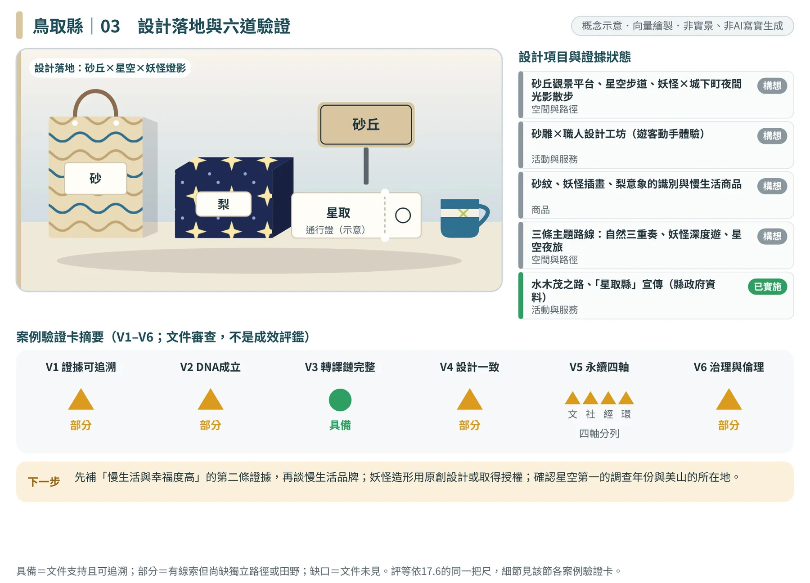
如何讀圖。左側是商品概念：手提袋、禮盒、路線牌、通行證與杯具，圖紋與色彩都來自前一張圖版。右側列出簡報的設計項目，只有「水木茂之路、星取縣宣傳」是縣政府資料中已實施的項目，其餘都是構想。下方的驗證摘要顯示：轉譯鏈最完整（V3具備），但識別規格與治理仍是部分。
從圖面回到實作。回到第17章與附錄C.13：每個構想項目都要補上「由哪一個DNA來」的追溯，並用範本07寫出識別使用規範；商品原型在試用前，不能把構想寫成成果。
鳥取砂丘主題的商品擺拍：砂紋手提袋、星空圖紋禮盒、一塊寫有「砂丘」的路線牌、車票形狀的通行證、一只藍色杯子，淺米色背景，柔和攝影棚光線，扁平插畫風格，配色限定砂米、海藍、星空靛、梨黃綠；不得出現既有漫畫角色、商標、可辨識的真實人物與可讀文字。
Product flat-lay for a Tottori-dunes-themed souvenir line: sand-ripple tote bag, starry gift box, route sign, ticket-style pass, blue mug, soft studio light, flat illustration, limited palette, no logos, no text.
本圖版為本書以程式向量繪製的概念示意圖，不是實景照片、田野照片，也不是AI寫實生成的結果；圖中的色彩為示範用概念色，未經採樣。提示詞供你在有影像生成工具時自行嘗試，生成結果須依研究核對後才可使用；案例事實見附錄E.7的查核項目。
G.4居鑾：鐵道與路徑型（3張概念圖版）#
居鑾01 場域與地方DNA
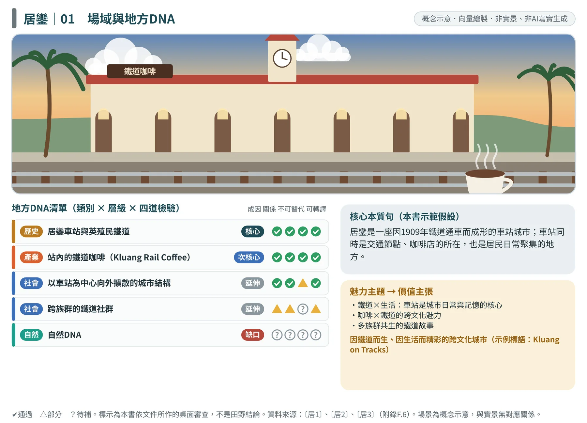
如何讀圖。場景是依簡報與百科條目繪製的概念畫：1909年通車的車站、站內咖啡、鐵軌與棕櫚。車站與鐵道、站內咖啡通過四道檢驗；「跨族群社群」只得△△？△，自然類則是缺口，所以這張圖面顯示的是鏈條最順、但上游證據最空的案例。
從圖面回到實作。回到3.5節與17.6節的居鑾驗證卡：把「跨族群鐵道社群」當成田野任務，先做口述與名單，再決定它是DNA還是魅力主題；自然DNA是缺口，不要為了完整而硬補。
馬來西亞居鑾舊火車站的黃昏，乳白色殖民風格站房與鐘塔，站內一間咖啡店，月台旁兩條鐵軌，兩旁有椰子樹，前景一杯冒著熱氣的咖啡；暖橘天空；扁平編輯插畫；店名只用「鐵道咖啡」這類通用字樣；不得出現既有漫畫角色、商標、可辨識的真實人物與可讀文字。 16:9。
Kluang railway station at golden hour, cream colonial station building with a small clock tower, a café inside the station, two railway tracks, palm trees, a steaming coffee cup in the foreground, flat editorial illustration, warm palette, generic sign text only, no logos, 16:9.
本圖版為本書以程式向量繪製的概念示意圖，不是實景照片、田野照片，也不是AI寫實生成的結果；圖中的色彩為示範用概念色，未經採樣。提示詞供你在有影像生成工具時自行嘗試，生成結果須依研究核對後才可使用；案例事實見附錄E.7的查核項目。
居鑾02 色彩與圖紋系統
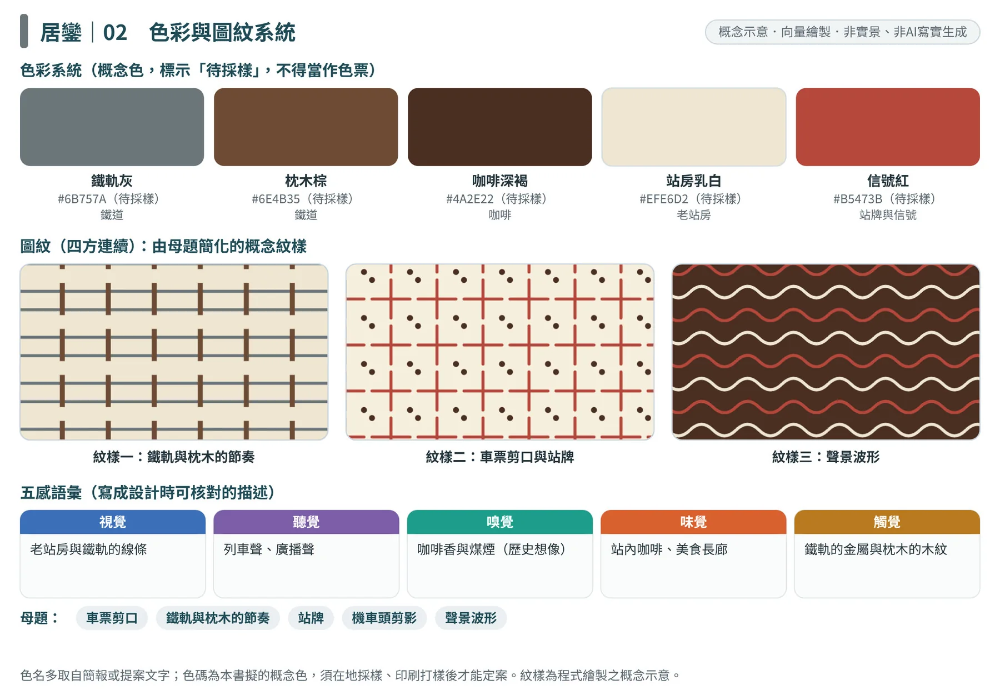
如何讀圖。五個色名取自鐵道物件：鐵軌灰、枕木棕、咖啡深褐、站房乳白、信號紅。三個紋樣分別來自鐵軌與枕木的節奏、車票剪口與站牌、聲景波形（列車聲與廣播聲）。五感欄是把「鐵道」與「咖啡」寫成可核對的描述，嗅覺中的煤煙屬歷史想像，須標示。
從圖面回到實作。回到第7、8章：聲景與氣味要實地錄音與採樣，才能從「想像」變成「語彙」；色票須由站房與枕木的實物採樣，再以範本07建立使用規範。
三種四方連續紋樣：（一）鐵軌與枕木的間距節奏，米色底灰色鐵軌；（二）車票剪口與站牌符號，信號紅與咖啡棕；（三）聲景波形，深褐底乳白波線；扁平向量，可無縫拼貼；不得出現既有漫畫角色、商標、可辨識的真實人物與可讀文字。
Three seamless patterns: rails and sleepers rhythm; ticket-punch and signboard motifs in signal red and coffee brown; soundscape waveform in cream on dark brown; flat vector, no text.
本圖版為本書以程式向量繪製的概念示意圖，不是實景照片、田野照片，也不是AI寫實生成的結果；圖中的色彩為示範用概念色，未經採樣。提示詞供你在有影像生成工具時自行嘗試，生成結果須依研究核對後才可使用；案例事實見附錄E.7的查核項目。
居鑾03 設計落地與六道驗證
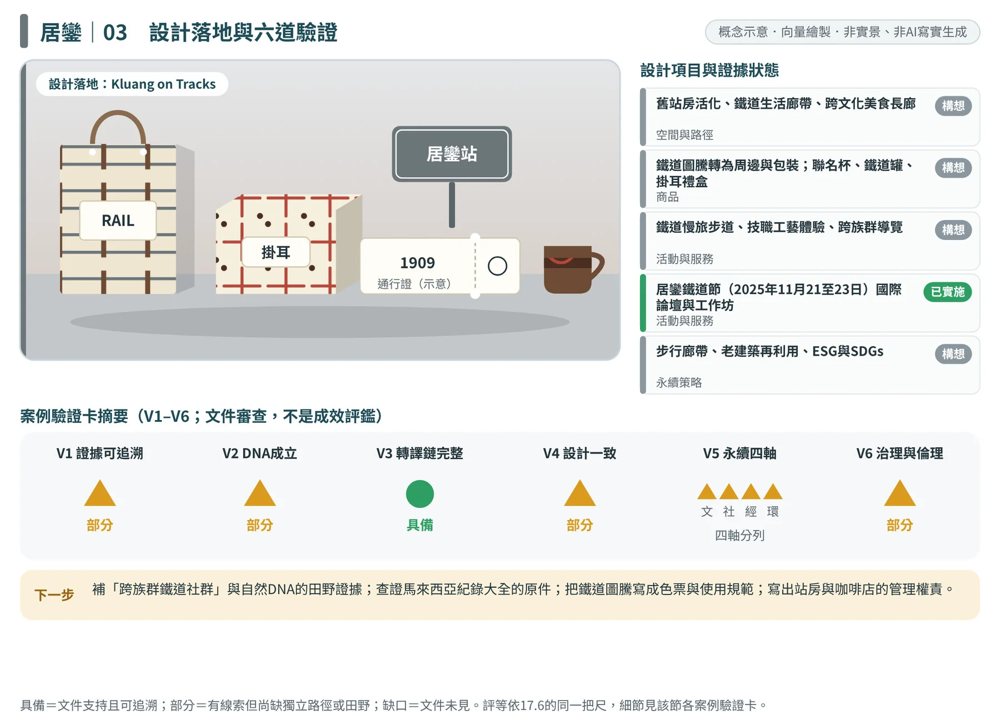
如何讀圖。商品概念包括鐵道圖騰手提袋、掛耳禮盒、站名路線牌、車票形通行證與咖啡杯。右側顯示：除了2025年的鐵道節是已實施，其他設計項目全部是構想。居鑾的V3具備，但V1、V2、V4、V6都只是部分，這是「鏈條順、證據薄」的典型。
從圖面回到實作。回到第10、17章：先把構想項目依「DNA→魅力→價值→落地」逐項寫成追溯矩陣；聯名杯與周邊要先確認與咖啡店的授權與分潤。
居鑾鐵道主題的聯名商品擺拍：鐵軌與枕木圖紋的手提袋、掛耳咖啡禮盒、寫著「居鑾站」的路線牌、車票形狀的通行證、咖啡杯，暖米色背景，柔和光線，扁平插畫；店名與標誌使用虛構的通用字樣；不得出現既有漫畫角色、商標、可辨識的真實人物與可讀文字。
Railway-themed souvenir flat-lay: rail-pattern tote, drip-coffee gift box, station sign, ticket-style pass, coffee mug, warm beige background, generic placeholder labels, no real brand logos.
本圖版為本書以程式向量繪製的概念示意圖，不是實景照片、田野照片，也不是AI寫實生成的結果；圖中的色彩為示範用概念色，未經採樣。提示詞供你在有影像生成工具時自行嘗試，生成結果須依研究核對後才可使用；案例事實見附錄E.7的查核項目。
G.5怡保：色彩與圖紋型（兼鐵道路徑）（3張概念圖版）#
怡保01 場域與地方DNA
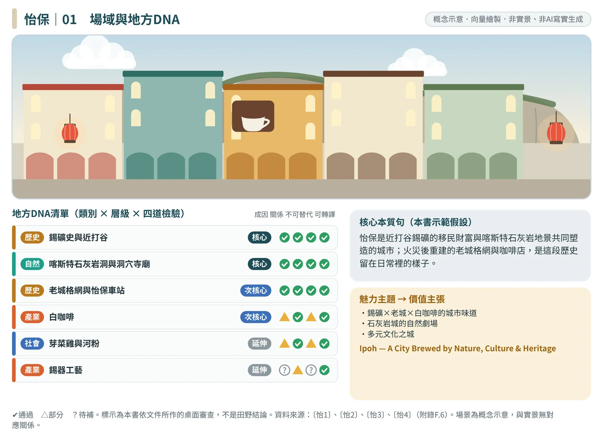
如何讀圖。場景以喀斯特石灰岩山丘、洞穴口微光與老城騎樓為主。錫礦、石灰岩洞與老城格網通過四道檢驗；白咖啡因起源說法不一，只能列次核心並標示成因待補。這張圖面最重要的提醒是：色名與地景都有了，但管理權責仍是缺口。
從圖面回到實作。回到3.5節與17.6節：白咖啡的起源要查第二條來源（附錄E.7）；洞穴寺廟屬宗教場域，光影工程須先走15.3節的文化倫理決策樹。
馬來西亞怡保老城的白日景色：背後是長滿植被的石灰岩山丘，山腳有一個洞穴口透出暖光，前景是彩色騎樓店屋（米白、青綠、芥黃）與拱形走廊，一個咖啡杯形的招牌；扁平編輯插畫；柔和的米色與淡藍天空；不得出現既有漫畫角色、商標、可辨識的真實人物與可讀文字。 16:9。
Ipoh old town in daylight, limestone karst hills with a glowing cave opening, pastel shophouse row with arched arcades, a coffee-cup-shaped sign, flat editorial illustration, beige and soft blue palette, no logos, no readable text, 16:9.
本圖版為本書以程式向量繪製的概念示意圖，不是實景照片、田野照片，也不是AI寫實生成的結果；圖中的色彩為示範用概念色，未經採樣。提示詞供你在有影像生成工具時自行嘗試，生成結果須依研究核對後才可使用；案例事實見附錄E.7的查核項目。
怡保02 色彩與圖紋系統
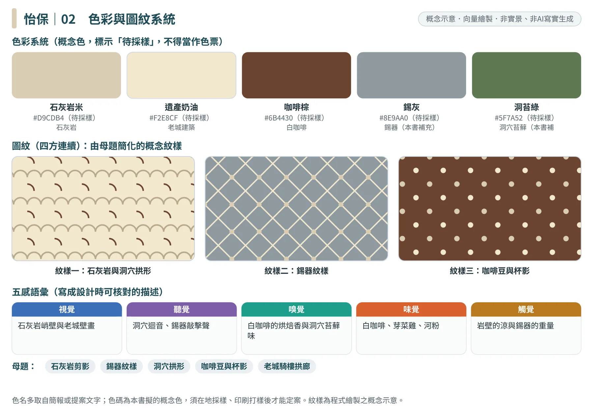
如何讀圖。簡報給了三個色名（Limestone Beige、Heritage Cream、Coffee Brown），本書補了錫灰與洞苔綠，並標明為補充。色名只是名稱，不是色票。紋樣則由石灰岩與洞穴拱形、錫器紋樣、咖啡豆與杯影簡化而成。
從圖面回到實作。回到第8章：「色名→色碼→色票」要經過實地採樣與印刷打樣；錫器紋樣須由錫器工匠審訂，並確認工藝紋樣的授權（9.7節）。
三種四方連續紋樣：（一）石灰岩與洞穴拱形的鱗狀弧線，米色底；（二）錫器的斜格與圓點，灰底淺米線；（三）咖啡豆與杯影的點陣，咖啡棕底；扁平向量，可無縫拼貼；不得出現既有漫畫角色、商標、可辨識的真實人物與可讀文字。
Three seamless patterns: limestone-and-arch scale arcs on beige; pewter-style diagonal lattice with dots; coffee bean dots on coffee brown; flat vector, limited palette.
本圖版為本書以程式向量繪製的概念示意圖，不是實景照片、田野照片，也不是AI寫實生成的結果；圖中的色彩為示範用概念色，未經採樣。提示詞供你在有影像生成工具時自行嘗試，生成結果須依研究核對後才可使用；案例事實見附錄E.7的查核項目。
怡保03 設計落地與六道驗證
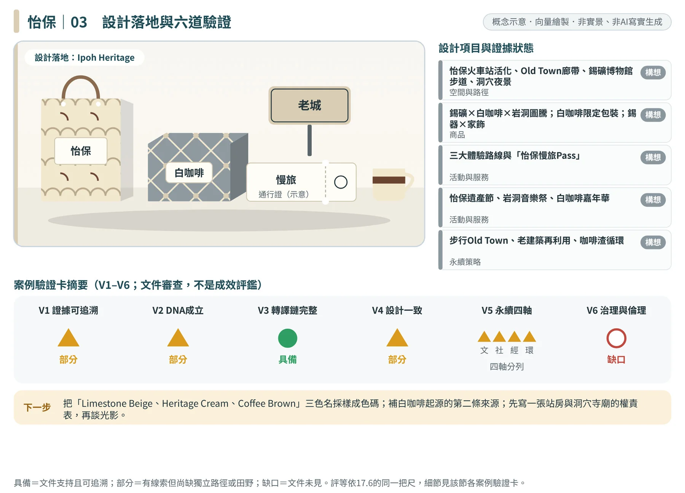
如何讀圖。商品概念：怡保手提袋、白咖啡禮盒、老城路線牌、慢旅通行證與杯具；圖紋取自前一張圖版。設計項目全是構想；V3具備，但V6是缺口：簡報未寫站房管理權責、洞穴寺廟的同意程序與圖騰使用授權。
從圖面回到實作。回到第15章與18.9節：先寫一張權責表（誰管、誰同意、誰維護），再談光影與節慶；「怡保」二字的商品使用要先確認地名與圖騰的授權範圍。
怡保老城主題的白咖啡限定商品擺拍：石灰岩鱗紋手提袋、白咖啡禮盒、錫灰色路線牌、車票形通行證、咖啡杯，米色與咖啡棕配色，柔和攝影棚光線，扁平插畫；使用虛構通用標示；不得出現既有漫畫角色、商標、可辨識的真實人物與可讀文字。
Souvenir flat-lay for an Ipoh white-coffee line: limestone-scale tote, gift box, pewter-grey route sign, ticket pass, coffee mug, beige and coffee-brown palette, generic labels only.
本圖版為本書以程式向量繪製的概念示意圖，不是實景照片、田野照片，也不是AI寫實生成的結果；圖中的色彩為示範用概念色，未經採樣。提示詞供你在有影像生成工具時自行嘗試，生成結果須依研究核對後才可使用；案例事實見附錄E.7的查核項目。
G.6雲林斗南：鐵道與路徑型（兼循環材料型）（3張概念圖版）#
斗南01 場域與地方DNA
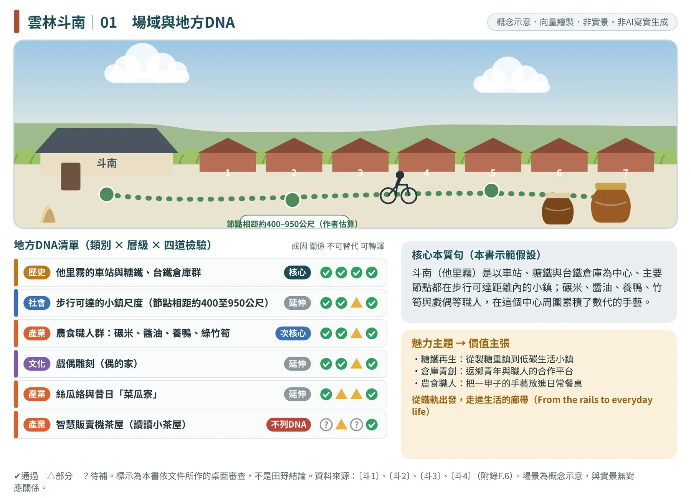
如何讀圖。場景畫出斗南車站、七座倉庫、步行廊帶與單車，以及甕缸與竹筍。車站與糖鐵、倉庫群通過四道檢驗；「步行可達的尺度」是作者的距離估算，列延伸；「讀讀小茶屋」是新事業，不列DNA。
從圖面回到實作。回到3.6節與17.6節：實地量測廊帶各節點的距離，才能把「步行尺度」從示範假設升為已查證；小茶屋與可可這類新事業，放在魅力主題的實踐裡，而不是DNA裡。
台灣雲林斗南老車站與七座紅褐色倉庫排成一列，前方有一條綠色步行與單車廊帶，一位單車騎士，旁邊有醬油甕缸與竹筍，晴朗藍天與稻田；扁平編輯插畫；糖鐵鏽紅、倉庫灰、稻米白與低碳綠；不得出現既有漫畫角色、商標、可辨識的真實人物與可讀文字。 16:9。
Douliu-area small-town rail corridor in Taiwan: old station, seven brick-red warehouses in a row, a green pedestrian and bike path, a cyclist, soy-sauce jars and bamboo shoots, clear sky and rice fields, flat editorial illustration, no logos, no text, 16:9.
本圖版為本書以程式向量繪製的概念示意圖，不是實景照片、田野照片，也不是AI寫實生成的結果；圖中的色彩為示範用概念色，未經採樣。提示詞供你在有影像生成工具時自行嘗試，生成結果須依研究核對後才可使用；案例事實見附錄E.7的查核項目。
斗南02 色彩與圖紋系統
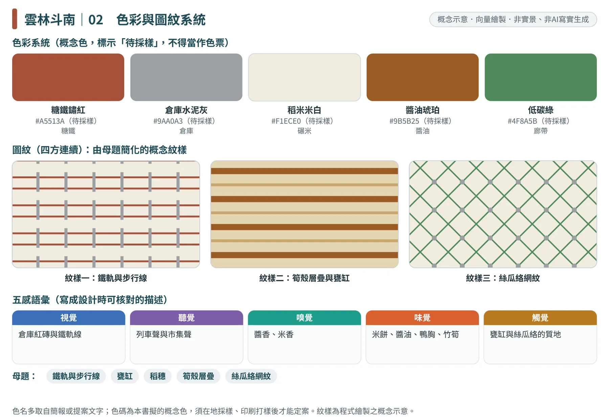
如何讀圖。色名取自糖鐵（鏽紅）、倉庫（水泥灰）、碾米（米白）、醬油（琥珀）與廊帶（低碳綠）。紋樣由鐵軌與步行線、筍殼層疊與甕缸、絲瓜絡網紋簡化而成。斗南目前的V4是缺口：各品牌各有識別，廊帶沒有共用的色彩與圖紋，這張圖版就是示範「從DNA取色」的第一步。
從圖面回到實作。回到第8、9章：用範本07把這五色採樣成色票，並以範本08訂出紋樣規格；先在廊帶的導引牌與倉庫入口試用，再擴及各品牌。
三種四方連續紋樣：（一）鐵軌與步行線，米白底鏽紅軌線；（二）筍殼層疊與甕缸的條紋，琥珀與米金；（三）絲瓜絡網紋，米白底綠線；扁平向量，可無縫拼貼；不得出現既有漫畫角色、商標、可辨識的真實人物與可讀文字。
Three seamless patterns: rail and walking-line rhythm in rust red; layered bamboo-sheath stripes in amber; loofah network lattice in green on off-white; flat vector, limited palette.
本圖版為本書以程式向量繪製的概念示意圖，不是實景照片、田野照片，也不是AI寫實生成的結果；圖中的色彩為示範用概念色，未經採樣。提示詞供你在有影像生成工具時自行嘗試，生成結果須依研究核對後才可使用；案例事實見附錄E.7的查核項目。
斗南03 設計落地與六道驗證
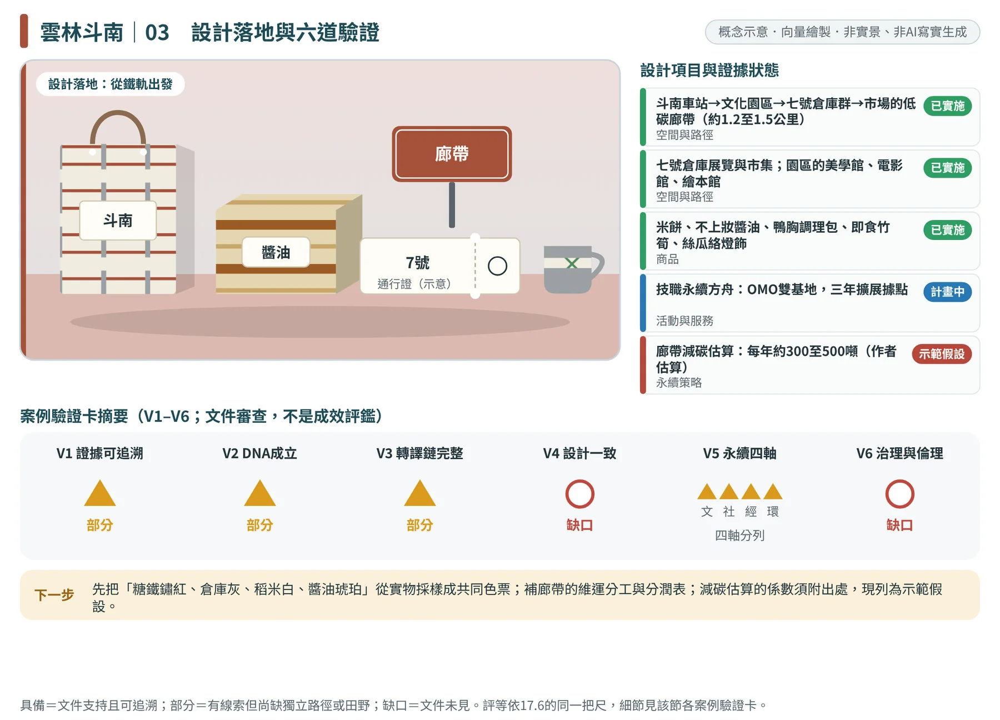
如何讀圖。商品概念：斗南手提袋、醬油禮盒、廊帶路線牌、7號倉庫通行證與杯具。右側顯示：廊帶、倉庫與品牌商品已實施，技職永續方舟計畫中，減碳估算是示範假設。驗證摘要顯示V4與V6是缺口：沒有共同識別，也沒有維運分工。
從圖面回到實作。回到16.4節與9.7節：把減碳估算的情境與係數寫成可重算的表；為廊帶寫識別使用規範與維運分潤，並把兩份作者文件與第三方報導分開計算證據路徑。
斗南糖鐵廊帶主題的在地商品擺拍：鏽紅鐵軌紋手提袋、醬油禮盒、寫著「廊帶」的路線牌、寫著「7號」的車票形通行證、小米色杯具，淺灰米色背景，扁平插畫；使用虛構通用標示；不得出現既有漫畫角色、商標、可辨識的真實人物與可讀文字。
Local-product flat-lay for a sugar-railway corridor: rust-rail pattern tote, soy-sauce gift box, corridor signpost, ticket pass labelled warehouse No.7, cream mug, light grey background, generic labels only.
本圖版為本書以程式向量繪製的概念示意圖，不是實景照片、田野照片，也不是AI寫實生成的結果；圖中的色彩為示範用概念色，未經採樣。提示詞供你在有影像生成工具時自行嘗試，生成結果須依研究核對後才可使用；案例事實見附錄E.7的查核項目。
G.7雲林古坑麻園：色彩與圖紋型（3張概念圖版）#
古坑01 場域與地方DNA
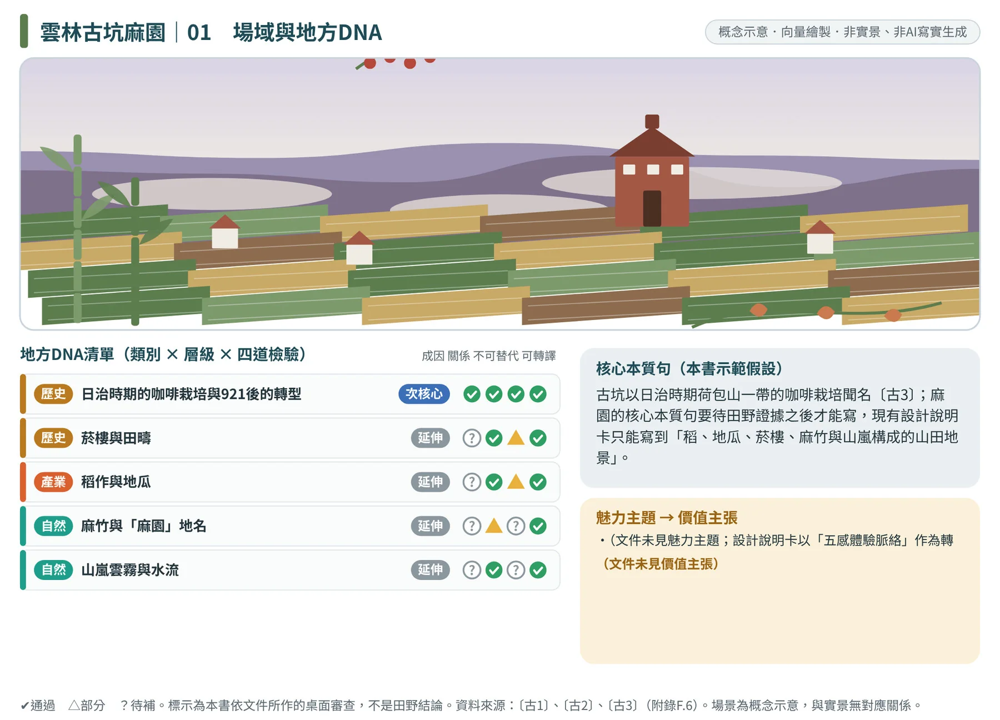
如何讀圖。這張場景是本書依設計說明卡與古坑咖啡史繪製的概念畫，不是設計稿本身：紫色山嵐、拼布田疇、菸樓、麻竹與地瓜。五項DNA中只有咖啡史通過四道檢驗，卻沒有被設計稿使用；麻園的稻、地瓜、山嵐與水流屬通用元素，通不過「不可替代」。
從圖面回到實作。回到2.5節與6.6節：寫出核心本質句之前，先做證據矩陣；若麻園的核心不是咖啡，要在句子裡寫明範圍是「鄉」還是「麻園」。
台灣雲林古坑麻園的山田地景：遠處紫色山嵐與晨霧，近處以拼布方式排列的稻田與地瓜田，一棟紅磚菸樓，幾間小屋，前景有麻竹與地瓜藤；扁平編輯插畫；配色限定麻園田翠綠、古井土褐、日光米金、菸樓紅磚、山嵐靜紫；不得出現既有漫畫角色、商標、可辨識的真實人物與可讀文字。 16:9。
Gukeng Mayuan hillside farmland in Taiwan, purple mountain mist, patchwork rice and sweet-potato fields, one red-brick tobacco-curing barn, small houses, hemp-bamboo and potato vines in the foreground, flat editorial illustration, restricted earthy palette, no text, 16:9.
本圖版為本書以程式向量繪製的概念示意圖，不是實景照片、田野照片，也不是AI寫實生成的結果；圖中的色彩為示範用概念色，未經採樣。提示詞供你在有影像生成工具時自行嘗試，生成結果須依研究核對後才可使用；案例事實見附錄E.7的查核項目。
古坑02 色彩與圖紋系統
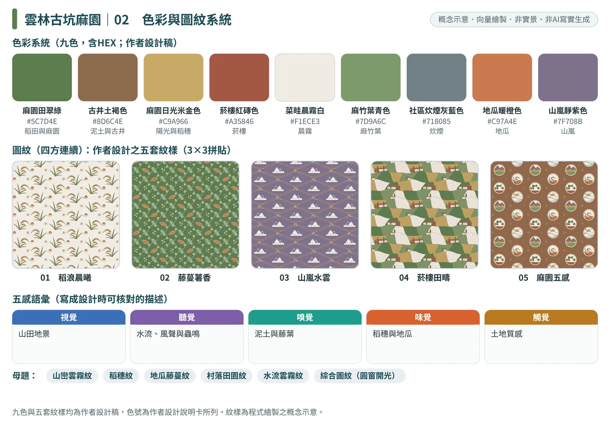
如何讀圖。九色與五套紋樣是作者的設計稿，色號取自設計說明卡。五套紋樣各有排列方式（散點、連綴、重疊）；單位圖為1200×1200像素，基準格100像素，半格位移的逐像素誤差不超過4/255，是九個案例中唯一有規格、可驗證的視覺系統。
從圖面回到實作。回到第8、9章與範本07、08：這是本書認為視覺系統「可以做到多精確」的範例；但色名與母題的「為什麼」仍沒有證據，須回頭補DNA證據，否則只是好看的擷取。
作者的五套紋樣已完成，不需再以AI生成；若要擴充，可用以下提示詞產生第六套草稿：以「麻竹葉與炊煙」為母題，四方連續，單位1200×1200，色彩限定麻園田翠綠、麻竹葉青、菜畦晨霧白與社區炊煙灰藍，扁平向量風格；不得出現既有漫畫角色、商標、可辨識的真實人物與可讀文字。
Seamless tile, hemp-bamboo leaves and chimney smoke motif, flat vector, restricted palette of deep green, bamboo green, mist white and slate blue, 1200x1200, no text.
本圖版為本書以程式向量繪製的概念示意圖，不是實景照片、田野照片，也不是AI寫實生成的結果；圖中的色彩為示範用概念色，未經採樣。提示詞供你在有影像生成工具時自行嘗試，生成結果須依研究核對後才可使用；案例事實見附錄E.7的查核項目。
古坑03 設計落地與六道驗證
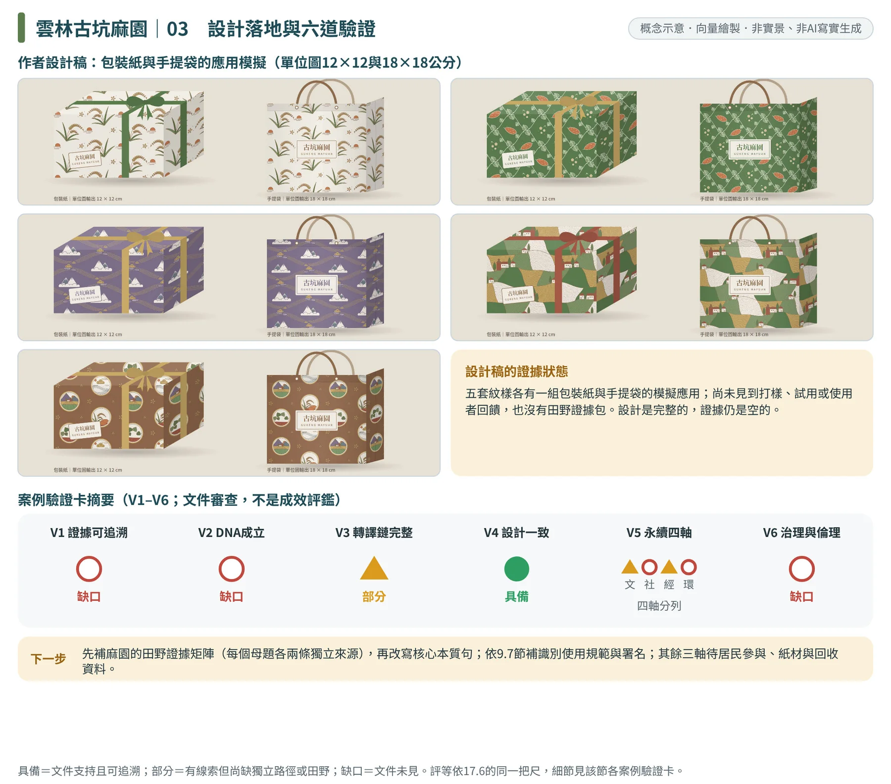
如何讀圖。這張圖版直接使用作者的包裝紙與手提袋模擬圖（五套紋樣各一組）。V4具備，是本書唯一的「設計層完整」案例；但V1、V2、V6是缺口：沒有田野證據、沒有通過檢驗的DNA、沒有使用規範。這個對照正是這個案例的教學意義。
從圖面回到實作。回到第17章與附錄C.13：照驗證卡逐格補證據；紙材、印刷與回收要補進永續四軸的環境項目；識別規範按9.7節撰寫。
設計稿已完成，無需再生成；如需延伸到其他載體，可用以下提示詞產生概念草圖：以古坑麻園第二套「藤蔓薯香」紋樣為基礎，展示在帆布袋、咖啡杯套與茶包標籤上，淺米色背景，柔和光線，扁平插畫；不得出現既有漫畫角色、商標、可辨識的真實人物與可讀文字。
Extend an existing sweet-potato-vine pattern onto a canvas tote, coffee sleeve and tea-bag label, light beige background, soft light, flat illustration, no logos, no text.
本圖版為本書以程式向量繪製的概念示意圖，不是實景照片、田野照片，也不是AI寫實生成的結果；圖中的色彩為示範用概念色，未經採樣。提示詞供你在有影像生成工具時自行嘗試，生成結果須依研究核對後才可使用；案例事實見附錄E.7的查核項目。
G.8雲林土庫：沉浸體驗型（兼命名與品牌型）（3張概念圖版）#
土庫01 場域與地方DNA
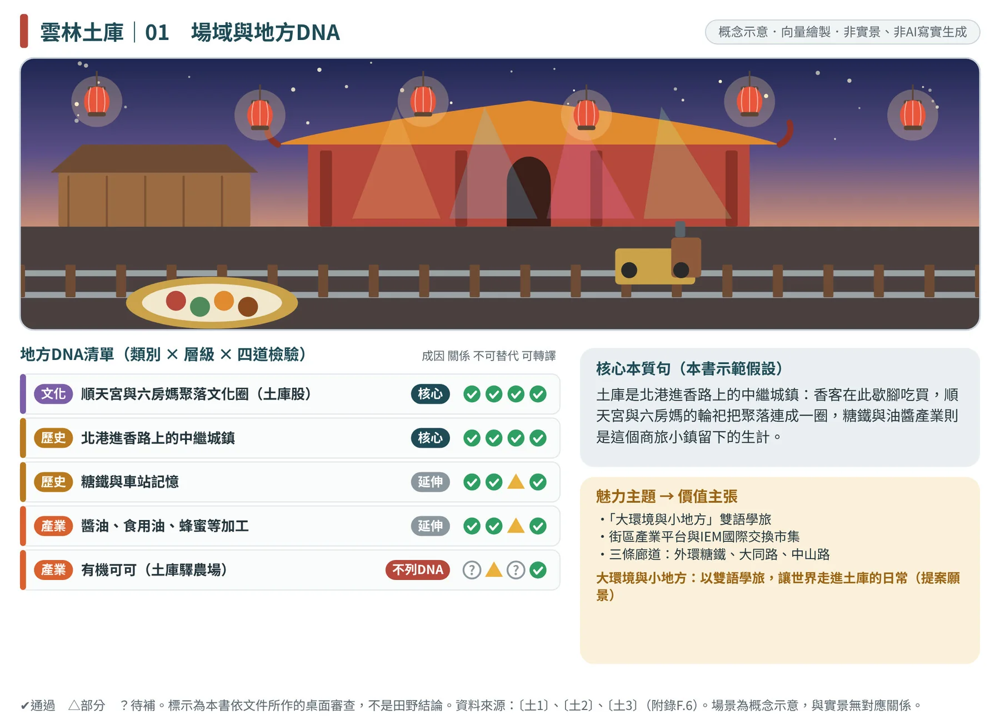
如何讀圖。場景畫出順天宮、木造第一市場、糖鐵小火車、辦桌圓桌與燈籠，以及光雕的光束。順天宮與北港進香中繼各通過四道檢驗；有機可可通不過「成因」與「不可替代」，是新事業，不是DNA。最強的DNA（進香中繼）沒有成為提案的主軸。
從圖面回到實作。回到2.5節的「不是DNA」案例與17.6節：若要讓進香中繼成為主軸，要補「進香路線」的史料與口述；可可與旅店要寫成「新事業」，並說明與DNA的連結。
台灣雲林土庫的黃昏：一座紅牆橘瓦的廟宇與木造市場，廟前有彩色光雕光束，糖鐵小火車停在鐵軌上，前景有辦桌圓桌與燈籠；扁平編輯插畫；暖橘與紫色夜空；不得出現既有漫畫角色、商標、可辨識的真實人物與可讀文字。 16:9。
Taiwanese temple town at dusk, red-walled temple with orange roof, wooden market hall, colourful light-show beams, small sugar railway train on tracks, round banquet table and lanterns in the foreground, flat editorial illustration, no logos, no text, 16:9.
本圖版為本書以程式向量繪製的概念示意圖，不是實景照片、田野照片，也不是AI寫實生成的結果；圖中的色彩為示範用概念色，未經採樣。提示詞供你在有影像生成工具時自行嘗試，生成結果須依研究核對後才可使用；案例事實見附錄E.7的查核項目。
土庫02 色彩與圖紋系統
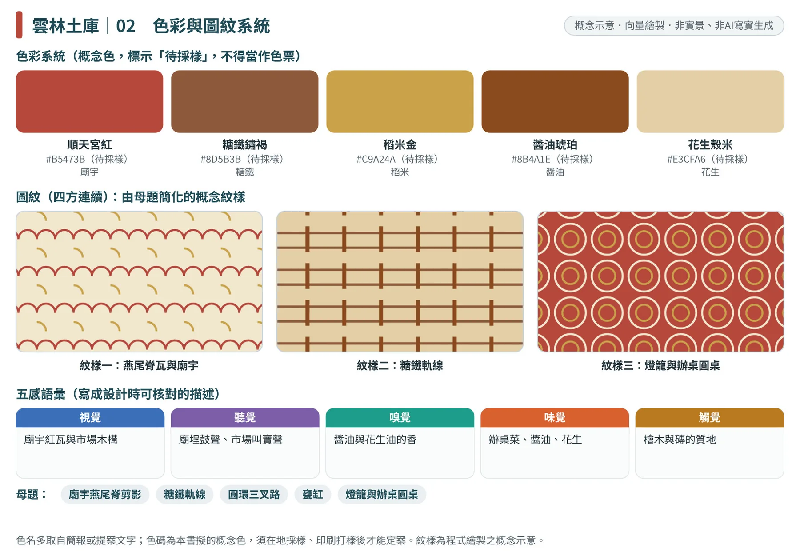
如何讀圖。色名取自順天宮紅、糖鐵鏽褐、稻米金、醬油琥珀與花生殼米。紋樣由燕尾脊瓦、糖鐵軌線、燈籠與辦桌圓桌簡化而成。土庫的V4是缺口：提案書沒有色彩或圖紋規格，這張圖版示範的是「從DNA取色」。
從圖面回到實作。回到第8、9章：用範本07採樣順天宮與第一市場的實際顏色；廟宇相關紋樣要先走15.3節的文化倫理決策樹，確認廟方同意。
三種四方連續紋樣：（一）燕尾脊瓦的鱗狀弧線，米色底紅線；（二）糖鐵軌線與枕木，花生殼米底褐色軌線；（三）燈籠光暈的同心圓，紅底米色；扁平向量，可無縫拼貼；不得出現既有漫畫角色、商標、可辨識的真實人物與可讀文字。
Three seamless patterns: temple-roof scale arcs in red on cream; sugar-railway lines in brown on peanut-shell beige; lantern-glow concentric circles in cream on red; flat vector.
本圖版為本書以程式向量繪製的概念示意圖，不是實景照片、田野照片，也不是AI寫實生成的結果；圖中的色彩為示範用概念色，未經採樣。提示詞供你在有影像生成工具時自行嘗試，生成結果須依研究核對後才可使用；案例事實見附錄E.7的查核項目。
土庫03 設計落地與六道驗證
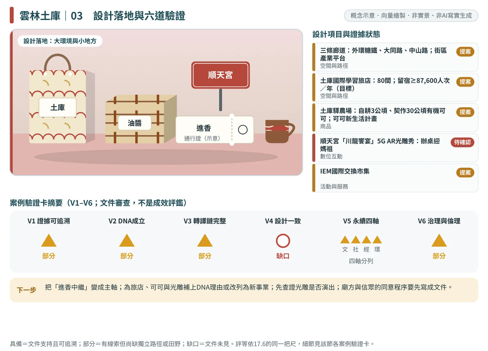
如何讀圖。商品概念：土庫手提袋、醬油與油品禮盒、順天宮路線牌、進香通行證與學旅杯具。右側顯示：全部設計項目都是提案或待確認；87,600人次與2.4億元是提案目標。驗證摘要顯示V4是缺口、V3與V6是部分。
從圖面回到實作。回到第5章與16.4節：用算術檢查目標（87,600＝80間×365天×3人；2.4億元÷87,600≈2,740元），並把「是目標」寫在每一個數字旁邊。
土庫進香中繼主題的商品擺拍：燕尾脊瓦紋手提袋、醬油與花生油禮盒、寫著「順天宮」的路線牌、進香通行證、杯具，淺米色背景，柔和光線，扁平插畫；使用虛構通用標示；不得出現既有漫畫角色、商標、可辨識的真實人物與可讀文字。
Flat-lay for a pilgrimage-stopover town: roof-tile pattern tote, soy-sauce and peanut-oil gift box, temple route sign, pilgrim pass, mug, light beige background, generic labels only.
本圖版為本書以程式向量繪製的概念示意圖，不是實景照片、田野照片，也不是AI寫實生成的結果；圖中的色彩為示範用概念色，未經採樣。提示詞供你在有影像生成工具時自行嘗試，生成結果須依研究核對後才可使用；案例事實見附錄E.7的查核項目。
G.9雲林北港：沉浸體驗型（兼命名與品牌型）（3張概念圖版）#
北港01 場域與地方DNA
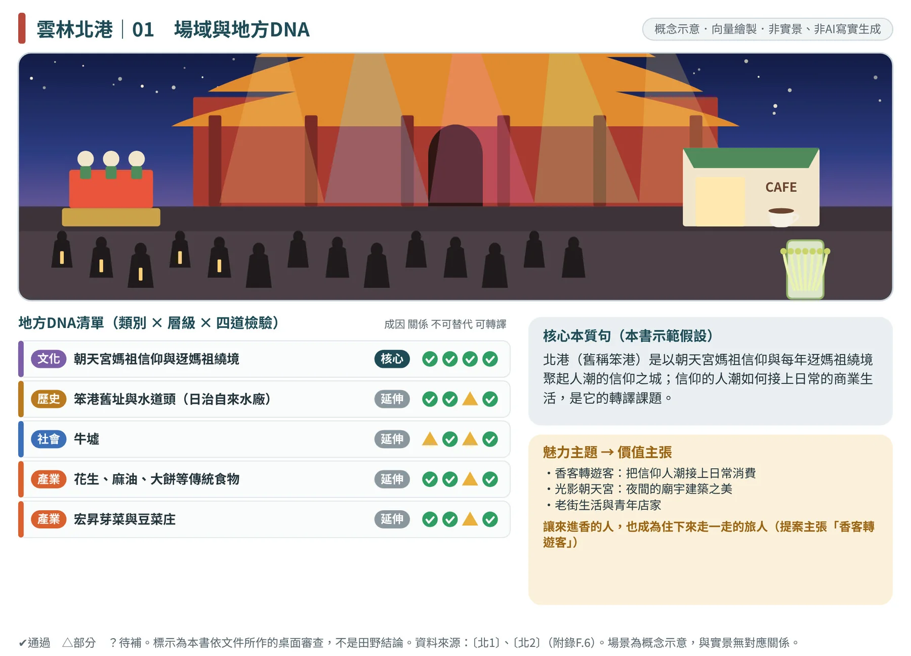
如何讀圖。場景畫出朝天宮的光雕、香客的剪影、藝閣花車、咖啡店與芽菜瓶。朝天宮媽祖信仰與迓媽祖是九個案例中少數V2具備的DNA，有提案、媒體與廟宇資料三條路；芽菜是瀕危產業DNA，要先「保存」。
從圖面回到實作。回到2.4節的保存優先與17.6節：北港的題目是把宗教人潮接上日常消費，不是把信仰商品化；人口數字與「全台唯一」須先查證（附錄E.7）。
台灣雲林北港朝天宮的夜晚：三層橘色屋頂的廟宇正面被彩色光束照亮，前方許多拿著提燈的香客剪影走向一間小咖啡店，旁邊有一台藝閣花車，角落有一罐芽菜；扁平編輯插畫；深藍夜空；不得出現既有漫畫角色、商標、可辨識的真實人物與可讀文字。 16:9。
Taiwanese temple town at night, a triple-roof temple facade lit by coloured light beams, pilgrims with lanterns in silhouette walking toward a small cafe, a decorated procession float, a jar of bean sprouts, flat editorial illustration, deep blue sky, no logos, no text, 16:9.
本圖版為本書以程式向量繪製的概念示意圖，不是實景照片、田野照片，也不是AI寫實生成的結果；圖中的色彩為示範用概念色，未經採樣。提示詞供你在有影像生成工具時自行嘗試，生成結果須依研究核對後才可使用；案例事實見附錄E.7的查核項目。
北港02 色彩與圖紋系統
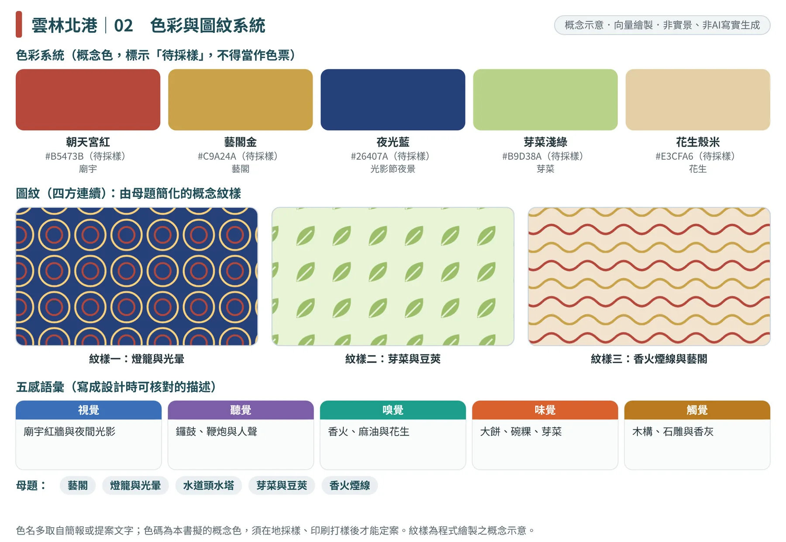
如何讀圖。色名取自朝天宮紅、藝閣金、夜光藍、芽菜淺綠與花生殼米；紋樣由燈籠光暈、芽菜與豆莢、香火煙線與藝閣簡化而成。北港的視覺語彙集中在「光」，但光尚未延伸到市集、商品與老街，所以V4只是部分。
從圖面回到實作。回到第8、9章：把「光」寫成色票與紋樣規則（例如光暈的半徑與色彩）；宗教建築與神像的圖像使用須依9.7節與15.3節。
三種四方連續紋樣：（一）燈籠光暈的同心圓，夜光藍底金色圓；（二）芽菜與豆莢的葉形，淡綠底；（三）香火煙線的波線，米色底紅金線；扁平向量，可無縫拼貼；不得出現既有漫畫角色、商標、可辨識的真實人物與可讀文字。
Three seamless patterns: lantern-glow concentric circles in gold on night blue; sprout and pod leaf shapes on pale green; incense-smoke wave lines in red and gold on cream; flat vector.
本圖版為本書以程式向量繪製的概念示意圖，不是實景照片、田野照片，也不是AI寫實生成的結果；圖中的色彩為示範用概念色，未經採樣。提示詞供你在有影像生成工具時自行嘗試，生成結果須依研究核對後才可使用；案例事實見附錄E.7的查核項目。
北港03 設計落地與六道驗證
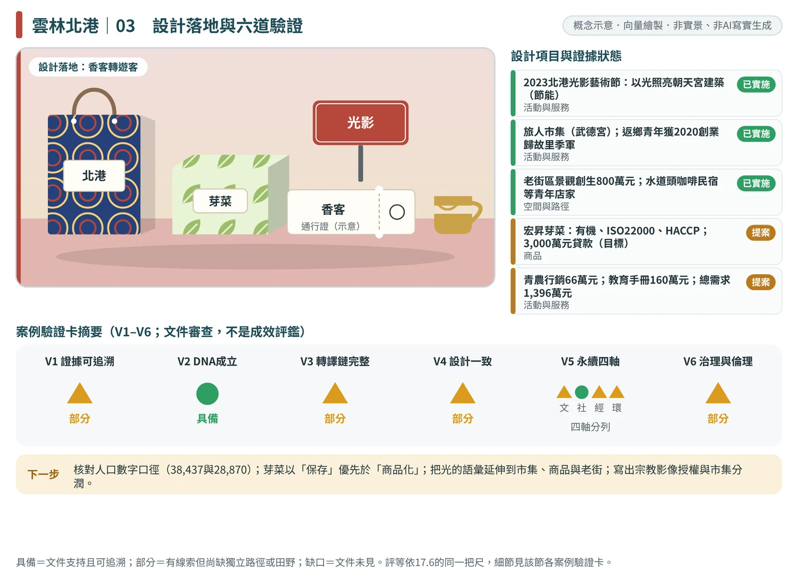
如何讀圖。商品概念：北港手提袋、芽菜禮盒、「光影」路線牌、香客通行證與旅人杯具。右側顯示：光影節、旅人市集與老街店家是已實施；芽菜資金與青農行銷是提案。驗證摘要顯示V2具備、V5的社會軸具備，是這個案例的強項。
從圖面回到實作。回到16.6節與15.3節：把「香客轉遊客」的轉換寫成可追蹤的指標（停留時間、消費品項），並把宗教影像授權與市集分潤寫成文件。
北港「香客轉遊客」主題的商品擺拍：燈籠光暈紋手提袋、芽菜禮盒、寫著「光影」的路線牌、香客通行證、杯具，深藍與金色配色，柔和光線，扁平插畫；使用虛構通用標示；不得出現既有漫畫角色、商標、可辨識的真實人物與可讀文字。
Flat-lay for a pilgrim-to-visitor town: lantern-glow tote, bean-sprout gift box, light-show route sign, pilgrim pass, mug, deep blue and gold palette, generic labels only.
本圖版為本書以程式向量繪製的概念示意圖，不是實景照片、田野照片，也不是AI寫實生成的結果；圖中的色彩為示範用概念色，未經採樣。提示詞供你在有影像生成工具時自行嘗試，生成結果須依研究核對後才可使用；案例事實見附錄E.7的查核項目。
G.10南投鹿谷：工藝與商品型（兼循環材料型）（3張概念圖版）#
鹿谷01 場域與地方DNA
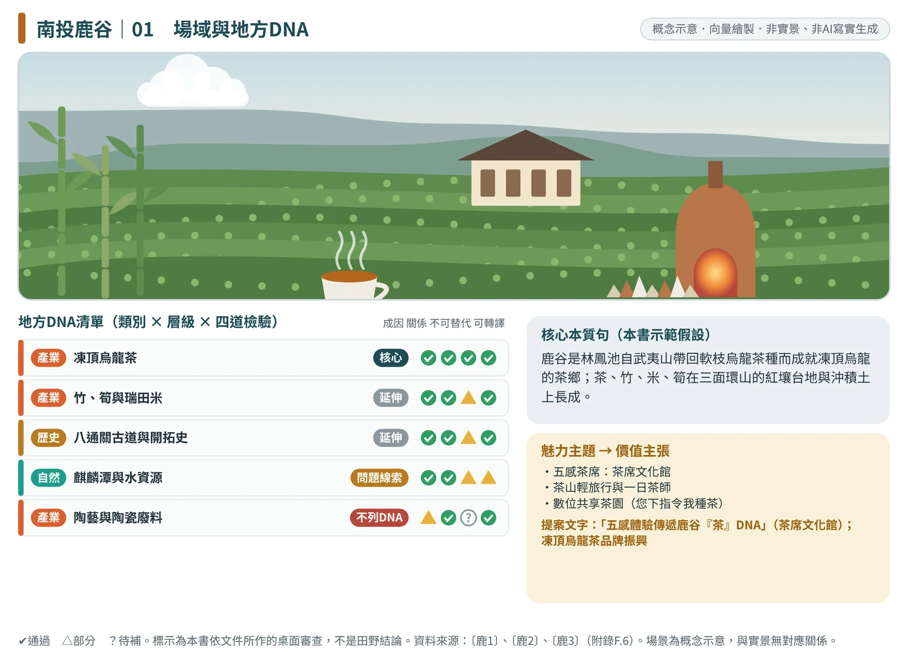
如何讀圖。場景畫出茶園梯田、茶席文化館、竹林、窯火與陶片，以及一杯茶。凍頂烏龍茶通過四道檢驗；竹與筍和竹山重疊，列延伸；陶瓷廢料是可轉化物，不是DNA。這是「茶是DNA、廢料是可轉化物」的教學圖。
從圖面回到實作。回到2.5節與16.4節：DNA與可轉化物不在同一條鏈上，但可以放進同一個永續框架；窯火再生的證據（191道配方、1:2比例）要與茶的證據分開寫。
台灣南投鹿谷的茶山：層層梯田茶園與三面環山的稜線，山腰一棟日式屋頂的茶席文化館，前景有竹林、一座陶窯冒出火光，地上散落陶片，一杯冒著熱氣的茶；扁平編輯插畫；茶園青、茶湯琥珀與陶土赭；不得出現既有漫畫角色、商標、可辨識的真實人物與可讀文字。 16:9。
Tea terraces in Lugu, Nantou, ringed by mountains, a tea-house with a traditional roof, bamboo groves, a small pottery kiln with fire glow and scattered shards, a steaming cup of tea in the foreground, flat editorial illustration, tea green and amber palette, no logos, no text, 16:9.
本圖版為本書以程式向量繪製的概念示意圖，不是實景照片、田野照片，也不是AI寫實生成的結果；圖中的色彩為示範用概念色，未經採樣。提示詞供你在有影像生成工具時自行嘗試，生成結果須依研究核對後才可使用；案例事實見附錄E.7的查核項目。
鹿谷02 色彩與圖紋系統
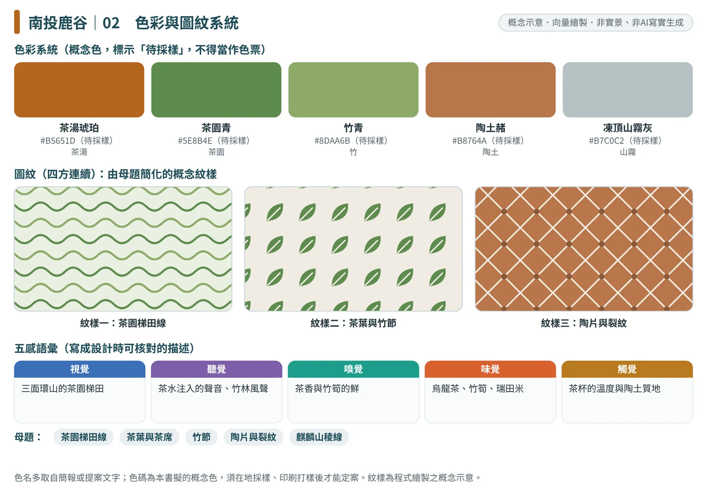
如何讀圖。色名取自茶湯琥珀、茶園青、竹青、陶土赭與凍頂山霧灰；紋樣由茶園梯田線、茶葉與竹節、陶片與裂紋簡化而成。鹿谷的V4是部分：茶席文化館以五感傳遞茶DNA，凍頂茶LOGO以比賽徵集，但沒有共同的茶色與茶具造形語彙。
從圖面回到實作。回到第8、9章：用範本07採樣茶湯與陶土的顏色，以範本08建立「茶園線」與「陶片裂紋」兩種紋樣的規格；LOGO徵集要附使用規範（9.7節）。
三種四方連續紋樣：（一）茶園梯田的等高波線，淡綠底；（二）茶葉與竹節，米白底；（三）陶片與裂紋的斜格，陶土赭底；扁平向量，可無縫拼貼；不得出現既有漫畫角色、商標、可辨識的真實人物與可讀文字。
Three seamless patterns: contour wave lines of tea terraces on pale green; tea leaf and bamboo node on off-white; cracked pottery lattice on terracotta; flat vector.
本圖版為本書以程式向量繪製的概念示意圖，不是實景照片、田野照片，也不是AI寫實生成的結果；圖中的色彩為示範用概念色，未經採樣。提示詞供你在有影像生成工具時自行嘗試，生成結果須依研究核對後才可使用；案例事實見附錄E.7的查核項目。
鹿谷03 設計落地與六道驗證
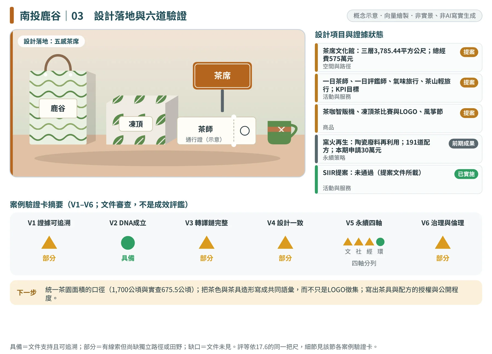
如何讀圖。商品概念：鹿谷手提袋、凍頂茶禮盒、「茶席」路線牌、一日茶師通行證與窯火杯具。右側顯示：全部是提案，窯火再生是前期成果加提案，SIIR案未通過。驗證摘要顯示V2具備、V5環境軸具備，這是由量測資料支持的。
從圖面回到實作。回到16.6節與附錄C.13：每一項KPI要寫清楚是目標；窯火再生的成形性限制（超過100克後下降）要在設計中保留，不要被商品化故事蓋過。
鹿谷茶與窯火再生主題的商品擺拍：茶園線紋手提袋、凍頂茶禮盒、寫著「茶席」的路線牌、一日茶師通行證、陶土色杯具，淺米色背景，柔和光線，扁平插畫；使用虛構通用標示；不得出現既有漫畫角色、商標、可辨識的真實人物與可讀文字。
Flat-lay for a tea-and-kiln themed line: tea-terrace tote, oolong gift box, tea-house route sign, tea-master pass, terracotta mug, light beige background, generic labels only.
本圖版為本書以程式向量繪製的概念示意圖，不是實景照片、田野照片，也不是AI寫實生成的結果；圖中的色彩為示範用概念色，未經採樣。提示詞供你在有影像生成工具時自行嘗試，生成結果須依研究核對後才可使用；案例事實見附錄E.7的查核項目。
G.11南投埔里：循環材料型（兼工藝與商品型）（3張概念圖版）#
埔里01 場域與地方DNA
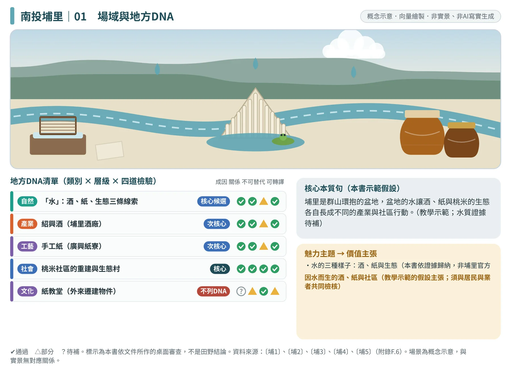
如何讀圖。場景畫出盆地、河流、紙漿槽與紙張、紙教堂、蛙與紹興酒甕。「水」是三條線索（酒、紙、生態）共同指向的核心候選，但三條都是業者或媒體敘事，缺水質證據，所以「獨立」只在來源，不在事實。桃米的重建通過四道檢驗。
從圖面回到實作。回到2.4節的三角檢證與17.6節：「水」要等水文資料補進來才能升為核心；紙教堂是外來遷建物件，列在地DNA會誤導。
台灣南投埔里盆地的水景：遠處青山，一條蜿蜒的河，岸邊有紙漿槽與晾紙的木框，中央有一座由紙管搭成的三角形教堂倒映在水池，池中有一隻綠色青蛙，右側有兩個酒甕；扁平編輯插畫；泉水青、紙米白與酒琥珀；不得出現既有漫畫角色、商標、可辨識的真實人物與可讀文字。 16:9。
Puli basin in Nantou, Taiwan: green hills, a winding river, a paper-making vat with a drying frame, a triangular church made of paper tubes reflected in a pond with a small green frog, two wine jars on the right, flat editorial illustration, spring-blue, paper-white and amber palette, no logos, no text, 16:9.
本圖版為本書以程式向量繪製的概念示意圖，不是實景照片、田野照片，也不是AI寫實生成的結果；圖中的色彩為示範用概念色，未經採樣。提示詞供你在有影像生成工具時自行嘗試，生成結果須依研究核對後才可使用；案例事實見附錄E.7的查核項目。
埔里02 色彩與圖紋系統
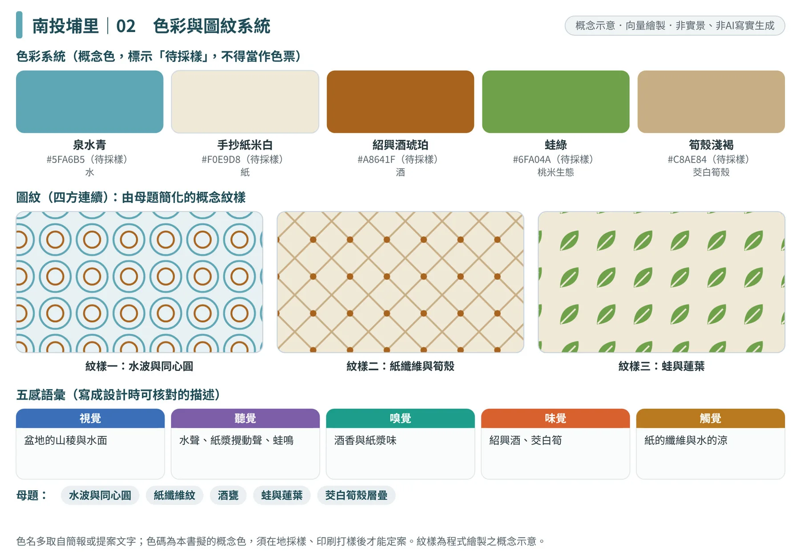
如何讀圖。色名取自泉水青、手抄紙米白、紹興酒琥珀、蛙綠與筍殼淺褐；紋樣由水波與同心圓、紙纖維與筍殼、蛙與蓮葉簡化而成。埔里三處各有各的識別，所以V4是缺口；這張圖版示範的是共同色票的概念，並非埔里的既有識別。
從圖面回到實作。回到第8章與9.7節：色票要與酒廠、紙寮、桃米三方共同審訂；紙纖維紋與酒甕造形的使用，要先確認各業者的同意。
三種四方連續紋樣：（一）水波的同心圓，淺藍底；（二）紙纖維與筍殼的細格，米白底；（三）蛙與蓮葉，淡綠底；扁平向量，可無縫拼貼；不得出現既有漫畫角色、商標、可辨識的真實人物與可讀文字。
Three seamless patterns: concentric water ripples on pale blue; paper-fibre and bamboo-shoot-sheath lattice on off-white; frog and lotus leaf on pale green; flat vector.
本圖版為本書以程式向量繪製的概念示意圖，不是實景照片、田野照片，也不是AI寫實生成的結果；圖中的色彩為示範用概念色，未經採樣。提示詞供你在有影像生成工具時自行嘗試，生成結果須依研究核對後才可使用；案例事實見附錄E.7的查核項目。
埔里03 設計落地與六道驗證
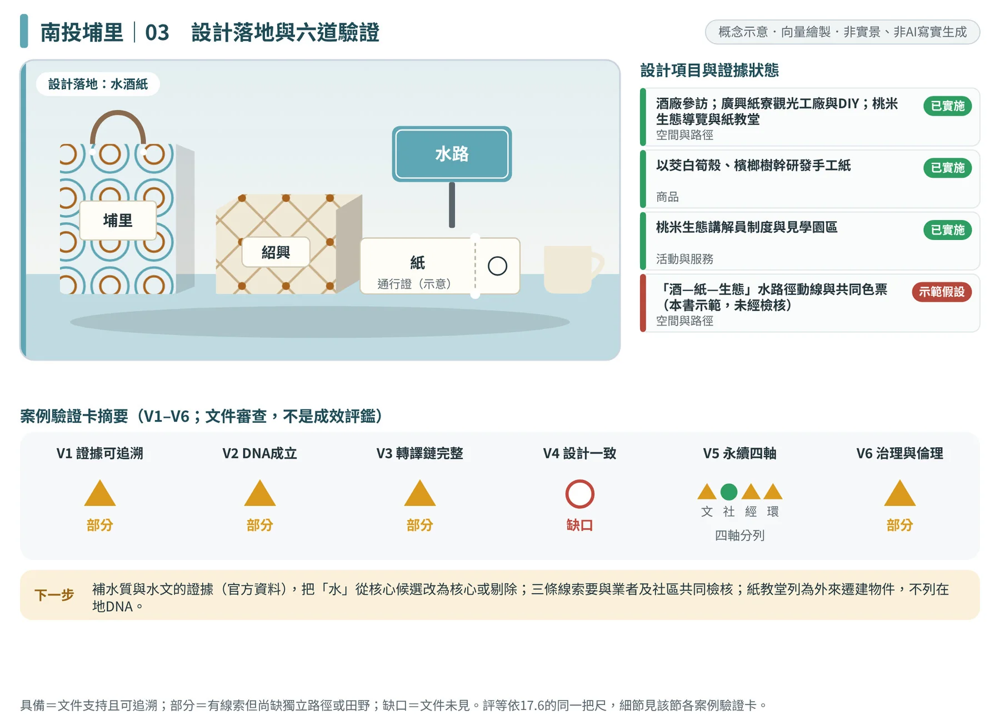
如何讀圖。商品概念：埔里手提袋、紹興酒禮盒、「水路」路線牌、紙教堂通行證與桃米杯具。右側顯示：酒廠參訪、手工紙與桃米導覽是已實施；水路徑動線是本書示範假設，未經檢核。驗證摘要顯示V5社會軸具備（培養24位生態講解員），這是這個案例的強項。
從圖面回到實作。回到第11章與17.6節：把三條線索連成一條遊程之前，先與三方確認意願與權責；水路徑動線列為示範假設。
埔里水酒紙主題的商品擺拍：水波紋手提袋、紹興酒禮盒、寫著「水路」的路線牌、紙張質感的通行證、杯具，淺米色背景，柔和光線，扁平插畫；使用虛構通用標示；不得出現既有漫畫角色、商標、可辨識的真實人物與可讀文字。
Flat-lay for a water-wine-paper line: ripple-pattern tote, rice-wine gift box, water-route sign, paper-textured pass, mug, light beige background, generic labels only.
本圖版為本書以程式向量繪製的概念示意圖，不是實景照片、田野照片，也不是AI寫實生成的結果；圖中的色彩為示範用概念色，未經採樣。提示詞供你在有影像生成工具時自行嘗試，生成結果須依研究核對後才可使用；案例事實見附錄E.7的查核項目。